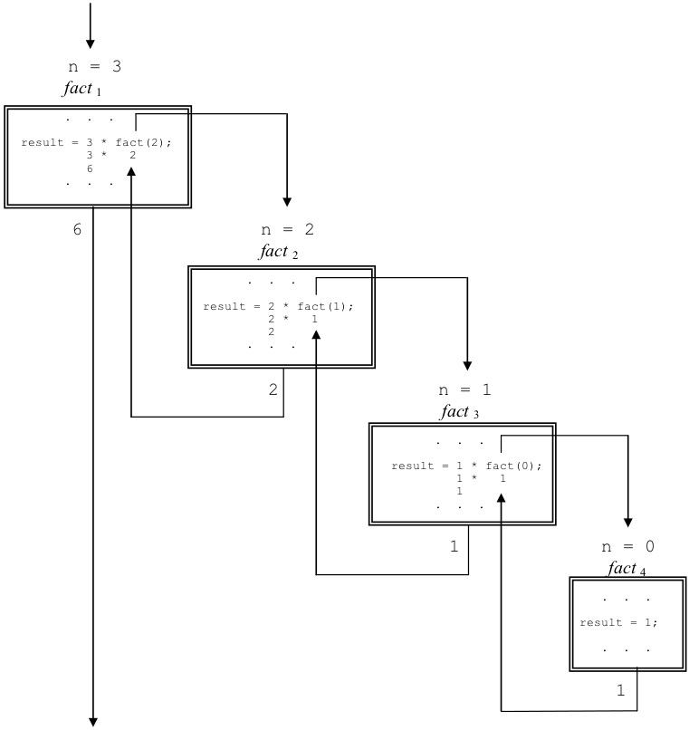
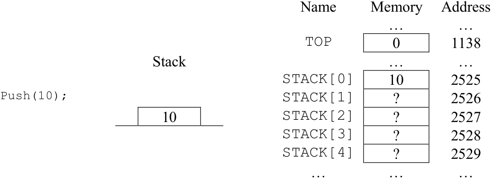
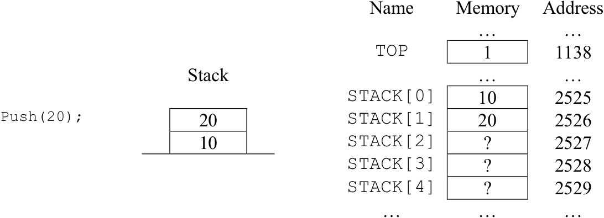
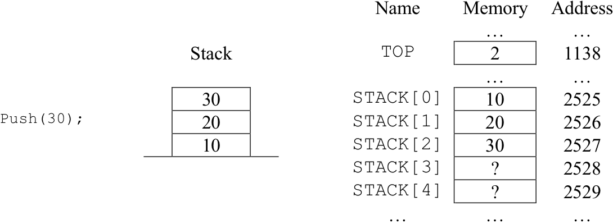
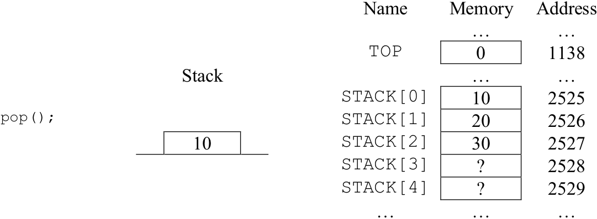
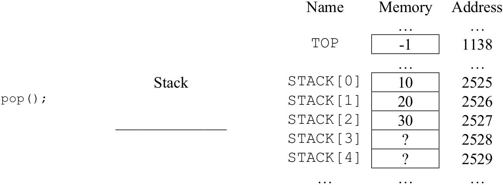

We now come to the final section of this chapter on imperative programming using Watson JavaScript. This section introduces the array data structure and illustrates how it can be used to implement higher-level data structures, such as stacks, which were described in Chapter .
Data in Watson JavaScript can be represented using two “structures”: variables and arrays. By now, you should be well acquainted with variables. But arrays are something new. An array is a collection of data values, all of the same type, which are stored in contiguous memory locations and accessed via an array name and subscript. A subscript is an integer constant or variable that is used to indicate the relative position of an individual item in the array.
A ten-element integer array is illustrated in . This array happens to be located in the computer’s memory at addresses 1000 to 1009, but it could just as easily have been located elsewhere. Immediately to the left of each element is the array name and subscript used to reference that element. The name of this particular array is A. The first position of A contains the value 10, the second position the value 999, the third 50, and so forth. Note that the elements are stored in “contiguous” memory locations – the first element is “next to” the second element, which is next to the third, which is next to the fourth, etc.
An illustration of a ten-element integer array
In Watson JavaScript, arrays are declared just below variables and before functions at the top of the program. Array declarations in Watson JavaScript use the following syntax:
var name = new Array(size); //type
where name is the name of the array, size is the number of individual elements that can be stored in the array, and type is the type of those elements, either numeric or text. Hence, the ten-element integer array named A illustrated in would be declared in Watson JavaScript as:
var A = new Array(10); // Numeric
Once declared, the individual elements of an array can be accessed for retrieval or modification. An “array reference” consists of the array name followed immediately by a subscript enclosed in square brackets. Subscripts indicate the “position” or element of an array. An important thing to note about array subscripts (in languages such as C, C++, Java, and JavaScript) is that the first element of an array is said to be at index position zero. Thus, A[0] is a reference to the first element of A, while A[1] is a reference to the second element of A, and A[2] is a reference to the third element of A.
An array reference can appear in a program pretty much anywhere a variable is allowed: in assignment statements, in “prompt” statements, in “write” and “writeln”, as function arguments, and in the relational expressions of “if”, “if-else”, “while”, and “for” statements.
For example, the statements:
would initialize the first, fifth, and eighth elements of A to the values shown in . The other elements could be initialized in a similar manner. The value of the eighth element of A, which is located at A[7], could be copied to a variable named X with a statement such as:
X = A[7];
Given the values in , this statement would place 37 into X. The value of A[7]could be incremented by 5, from 37 to 42, with the following statement:
A[7] = A[7] + 5;
It is also possible to directly print the value of an array element. The following statement displays value of the fifth element of A, 2001.
document.writeln(A[4]);
A subscript can be a numeric variable as well as a constant. This means that the pair of statements:
can be used to place the value 42 into A[6], the seventh element of A. This is so because the semantics of the assignment statement dictate that the value of the expression on the right hand side of the assignment operator is copied into the location specified by the variable or array element on the left hand side. Similarly, the following statements will retrieve a copy of the value stored at A[1], the value 999 according to , and place it into X.
Most students have little trouble with the idea of array access as long as constants are used for the subscripts. Many become confused, however, when variables are used. It is easy for you to avoid confusion by immediately looking up the current value of any subscript variables before you try to figure out the behavior of a statement that contains array references.
Applying this approach to the following statements:
We see that the first statement places a 5 in J. The second statement adds the current value of J to 3 and stores the result in I. Since J is 5, the result of the addition is 8, which is placed into I. Thus, when the third statement is reached, I = 8 and J = 5, so the statement would be, at that moment in time, equivalent to
A[8] = A[5] – 2;
Since the value of A[5] is 1066 (according to ), element A[8] is assigned the result of 1066 - 2, or 1064. This value overwrites any value previously stored in A[8], such as 99 according to .
The true power of variable subscripts becomes apparent when it is necessary to perform a specific operation on many individual array elements. For example, let’s say that we wanted to initialize all ten elements of the array of to zero.
One approach would be to use ten separate assignment statements, one for each element of the array, like so:
A[0] = 0;
A[1] = 0;
A[2] = 0;
A[3] = 0;
A[4] = 0;
A[5] = 0;
A[6] = 0;
A[7] = 0;
A[8] = 0;
A[9] = 0;
While this approach works, a much more flexible and compact solution to the array initialization problem can be obtained by using an iteration construct, such as “for”, to repeat a single assignment statement multiple times. In order for this technique to work, the assignment statement must reference the array elements using a variable subscript.
The technique is illustrated in . The program presented in that figure declares a ten-element array A, and an integer variable i. The variable is used to control a “for” loop that executes a total of ten times. Contained within the loop is a statement that assigns zero to the element at index position i of A.
The first time through the loop i will be 0, so the statement in the body of the loop is equivalent to:
A[0] = 0;
The next time through, i will be 1, so the statement is equivalent to:
A[1] = 0;
This pattern continues with i being incremented by one each time through the loop until finally i equals 9.
A partial program that declares a ten-element array and initializes each of its elements to zero
At this point the statement in the loop body is equivalent to:
A[9] = 0;
The loop variable is then incremented to 10, but since that is greater than 9, execution of the loop terminates.
This example illustrates an important problem solving technique. In general, when one wants to perform an operation of some sort on each of the elements of an N element array, the desired operation is written in terms of some generic element (such as the element at index position i). The operation is then embedded within a repetition construct that is programmed to execute N times.
Using iteration constructs and variable-based array references leads to compact and flexible programs. Even with the small ten-element array of , initializing all of the array elements to zero with the program of required only four lines of code (after discounting variable declarations), rather than the ten lines of code that would be needed if we avoided iteration.
The advantage of the iterative approach becomes even more pronounced when we consider larger arrays. For example, let’s assume that we wanted to increase the size of array A from 10 to 100 elements, and initialize each of these one hundred elements to zero. Regardless of the fact that we are increasing the amount of work to be done tenfold, the required changes to the program of are actually relatively minor.
First, in order to construct the larger array, the array declaration statement would have to be modified to read:
var A = new Array(100); // Numeric
The only other change required to the program of would be to update the “for” loop to allow it to repeat 100 times.
for (i = 0; i <= 99; i++)
If we had chosen to avoid iteration and use individual assignment statements with constant-based array references, initializing the 100-element array would have required one hundred separate assignment statements. Clearly, the use of iteration and variable-based array references are critical for solving problems involving sizable arrays.
By combining both arrays and loops, programmers can solve all sorts of problems that involve processing large amounts of data. For example, presents a function subprogram that performs a sequential search of a 100-element array for a target item. As you may recall from Chapter , search algorithms generally accept as input a list and a target item. Their task is to determine whether the target item is present in the list.
A function subprogram for searching a numeric array
The sequential search algorithm accomplishes this task by comparing the target item to each of the items of the list, starting with the first item and continuing to search until either a list item identical to the target item is found or all of the list items have been examined. The sequential search procedure was outlined in of Chapter .
In the function of , a numeric array of indeterminate size, named list, will hold the items to be searched. Another numeric variable, size, will specify the number of elements stored in the list. A third numeric variable named target will contain the value we are looking for. Since all three of these variables specify inputs to the function, they are declared in the function parameter list.
Instead of printing messages to report whether or not the target item occurs in the list (as was done in ), this function returns an integer number that indicates the index position of the first list item that matches the target. If no list item matches the target, a value of –1 is returned to indicate an unsuccessful search.
The implementation of the function is rather straightforward. It consists of a “for” loop that executes size number of times, with i going from 0 to size - 1. Thus, if the size of the array is 15, the loop will execute 15 times, with i having the value of 0 during the first pass through the loop and 14 during the final pass. If the size of the array is 1,000, the loop will execute 1,000 times. Within the loop is a single “if” statement that tests to see whether the target item is equal to the item at index position i of the array.
If they are not equal, no action is taken. If they are equal, the subscript of the current item is returned and the function terminates execution. Assuming the loop completes, in other words it executes all size times with i going from 0 to size – 1, then the target is not in the list and the Return(-1); statement is executed.
You should note that this program illustrates two new features of Watson JavaScript. First, it shows that arrays, as well as variables, can be listed as input parameters to functions. The second feature debuting in the program is the use of multiple return statements. The function can “exit” at two different points: one corresponding to the case where the target item is found, the other to the case where the target is not found.
The final example of this chapter is presented in . It illustrates how a higher-order data structure, in this case the stack, can be implemented in Watson JavaScript.
Stacks were discussed in detail in Chapter . Essentially a stack is a first-in, first-out data structure. Items can be placed onto the top of the stack via the “push” operator and removed from the top by “pop”.
An implementation of the stack data structure in Watson JavaScript
The program of constructs a stack out of an array, a variable, and two functions. The array will hold the actual stack items, the variable keeps up with the position of the “top” item of the stack, and the two functions implement the actual “push” and “pop” operations. The stack is designed to hold at most 100 numbers. Only numbers, as opposed to text, may be stored in this stack.
The main program begins by declaring the numeric variable TOP and the 100-item numeric array STACK. STACK’s declaration reserves room for 100 elements. Thus, numbers may be stored in positions STACK[0] through STACK[99]. Next, the functions push and pop are declared.
The first action of the main program is to initialize the stack to its “empty” configuration by setting TOP to –1. Why do we do this? Well, remember that TOP is always supposed to point to the top item in the stack. When the stack is empty, when there are no items in the stack, there is no top item. Setting TOP to –1, which is one less than the first position of the stack array, STACK[0], makes sense as a way to indicate there is no top item at the moment.
Following initialization of the stack to its empty configuration, the main program pushes three items onto the stack: 10, 20, and 30. It then proceeds to pop each item off the stack and print returned values. The actions of the “push” operations are illustrated in . The actions of the “pop” operations are shown in .
Let’s now take a closer look at the details of how the push and pop functions are implemented.
The purpose of the push function is to add an item to the top of the stack, if there is room to do so. It receives as input from its calling program an item that is to be stored on the top of the stack. The push function does not have a return value, since its purpose is to modify the stack not to return a value to its calling program.
Push begins by comparing the current value of TOP to 99 in order to determine whether there is room in the STACK array to accept another item. Remember, the simple stack implementation illustrated in can hold at most 100 items – in positions STACK[0] through STACK[99]. If TOP is currently less than 99, there is room in the array for at least one more item, so push increments the TOP variable by one and then places the item into array position STACK[TOP]. Note that if TOP is equal to 99 the STACK array is full and push takes no action.
The purpose of the pop function is to remove the top item from the stack and return it to the calling program. Pop has no input parameters, since the calling program doesn’t need to pass any values to pop for it to carry out its task. The function begins by declaring item to be a local numeric variable. Note that the item declared in pop is completely separate from the item parameter used in push. Next, Pop compares TOP to zero.
Part(a) – The state of the stack after the push(10) operation
Part(b) – The state of the stack after the push(20) operation
Part(c) – The state of the stack after the push(30) operation
The behavior of the push operations
Part(a) – The state of the stack after the first pop operation
Part(b) – The state of the stack after the second pop operation
Part(c) – The state of the stack after the third pop operation
The behavior of the pop operations
If TOP is greater than or equal to zero, then the stack is not empty. If this is the case, pop will take three actions. First, pop will assign to item the value of the element currently at the top of the stack, STACK[TOP]. Second, the TOP variable is decremented by one in order to denote the “removal” of this element from the stack. Finally, the value of the item is returned to the calling program – allowing pop to report back to the caller the item that was popped off the stack. It is important to note that even through the stack array itself is not modified by pop, the stack is one item “shorter” due to the change in the value of TOP.
If TOP is less than zero, the stack is empty and there is no value to return. However, since pop must return a number (according to “Returns Numeric” in the first line of the declaration) it simply returns zero in this case.
A feature of Watson JavaScript exploited by this program is that functions have the ability to access variables that are declared in the main program. Although TOP and STACK are defined in the main program, they are used by both the push and pop functions. It is important to remember that even though functions can “see” variables declared in the main program, the main program cannot “see” the variables declared by functions. Thus, statements in pop can access the main program variable TOP, but statements in the main program cannot access the variable item which was declared in pop.
While this implementation of a stack provides an excellent “capstone” example of the capabilities of Watson JavaScript programs, it also exposes a number of the language’s limitations.
One limitation imposed by using an array as the underlying data structure is that the maximum number of items that will be stored in the stack must be known when the program is written. This is necessary in order to specify the size of the array.
There are other, more subtle, “problems” with this implementation of a stack. Most of these problems are rooted in the fact that Watson JavaScript does not fully support object-oriented concepts.
Probably the most serious of these problems is that the definition of the stack is spread across the program – it exists as an array, a separate variable to keep up with the top item, and two separate functions for pushing and popping items on and off the stack.
In a true object-oriented language, all of the components that define the behavior of the stack could be “encapsulated” into an object. Doing so would have great benefits – such a preventing some part of the code from accidentally (or maliciously) changing the TOP pointer thereby breaking the functionality of the stack.
There are many other benefits to implementing programs in languages that support object-oriented features. Many of these benefits will be discussed in Chapter .
Exercises for
Write a function called sum that returns the sum of the numbers stored in a 50-element numeric array.
Modify the program of so that it can handle stacks up to size 500.
Modify the program of so that it implements a stack of strings, rather than a stack of numbers.